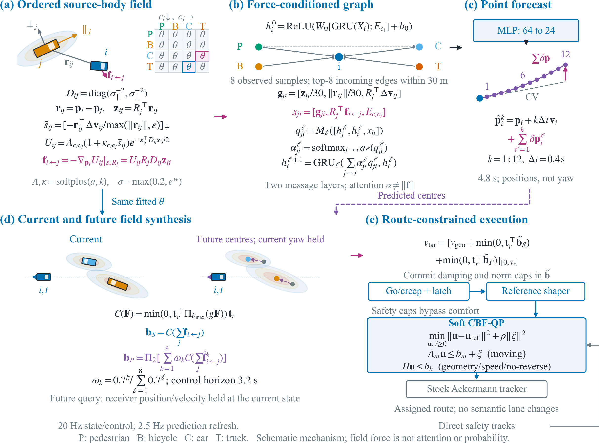
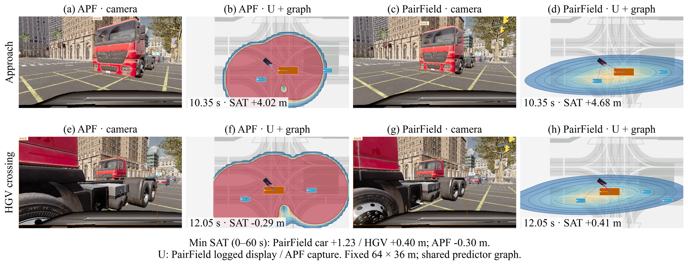
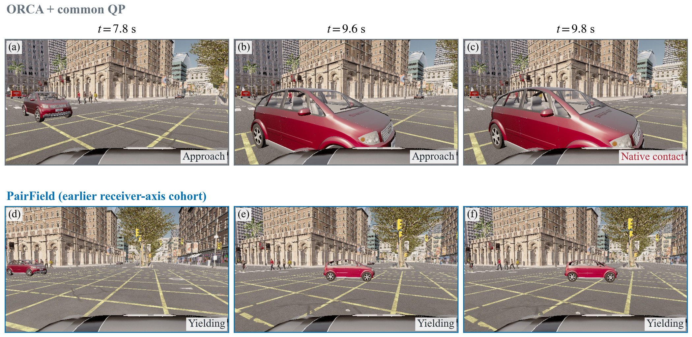
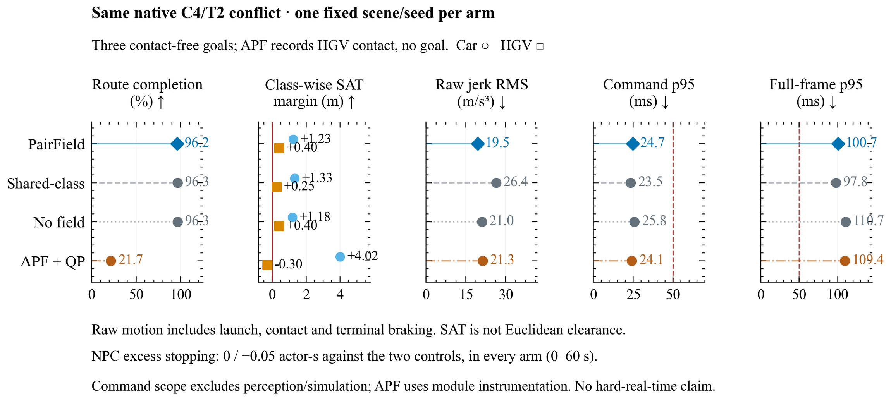
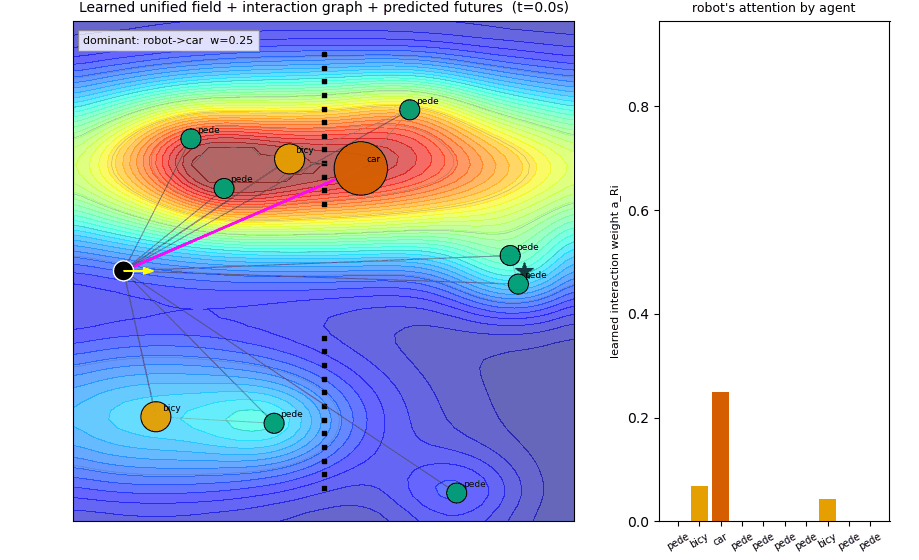
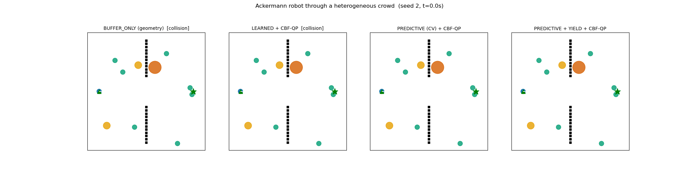

APF + common QP
HGV contact recordedContact near 12.1 s, at 21.7% route completion. The last recorded camera precedes the callback by one tick.
GIF replayFields · prediction · control
Class-conditioned fields for
heterogeneous navigation
A shared interaction representation connects source-aligned fields to graph prediction and route-constrained control.
The repository contains a portable CARLA reproduction preview. The complete release will follow.
Method
Surrounding agents differ in size and motion. PairField learns an ordered receiver/source class-pair potential in each source body's coordinate frame. Its longitudinal axis follows that agent's heading, independently of the ego camera.
The resulting force enters the prediction graph and the current navigation cue. Predicted positions produce a separate anticipatory cue. On roads, negative route-tangent components reduce target speed; they do not authorize lane changes. A CBF-QP filters the shaped reference before tracking.

Matched comparison
Same fixture, source-body predictor, sensing interface and current/future QP. APF replaces the nominal interaction field.
Contact near 12.1 s, at 21.7% route completion. The last recorded camera precedes the callback by one tick.
GIF replayGoal at 40.60 s on the assigned route. The minimum actual-body SAT margin is 0.40 m.
GIF replayBoth videos start at the same elapsed time. The APF recording ends after contact; it is not padded or replayed as a successful full route.

More interactions
Additional source-body runs show different interactions. These clips illustrate behavior; they are not additional independent benchmark samples.
Moving pedestrians, bicycles and cars; a contact-free 33.25 s goal. No truck interaction is claimed for this run.
GIF replayA turning source car changes its body heading. The current field follows that measured orientation; the run reaches its goal without contact.
GIF replayA contact-free 30.55 s goal with mixed road users. Pedestrian presence here does not establish a critical pedestrian-prediction test.
GIF replayThis paired illustration uses an earlier receiver-axis controller. It is separate from the source-body comparisons above and from the 72-episode density cohort.

Measured tradeoffs
One prescribed dense C4/T2 scene and seed per arm. Shared-class and no-field are separately trained systems; APF is a nominal-field substitution.

PairField, shared-class and no-field reach contact-free goals in 40.60, 43.45 and 40.35 s. PairField improves on shared-class spacing in this case but nearly ties no-field. Excess NPC stopping is identical across arms against both ego-absent controls. High launch and terminal jerk remains unresolved.
The system uses semantic-LiDAR returns to gate tracks; association, classes and kinematics remain privileged. These are modular closed-loop experiments. The displayed camera boxes are simulator-instance annotations. Neither raw-sensor end-to-end learning nor improved participant comfort is established by these clips.
The simpler simulator exposes fields and graph interactions directly. CARLA adds simulated sensing, native traffic response and physical tracking.


Reproduction
The public repository is threefur03/PairField-Nav. The CARLA preview includes source-body field and predictor components, field-based adapters, a portable synchronous example and offline smoke tests. Native portability checks and external checkpoint preparation remain part of the release work.
Raw uniD/inD data, CARLA binaries and private experiment caches are not redistributed. The portable example is separate from the frozen experiment harness and does not claim to regenerate the reported numbers unchanged.
Repository